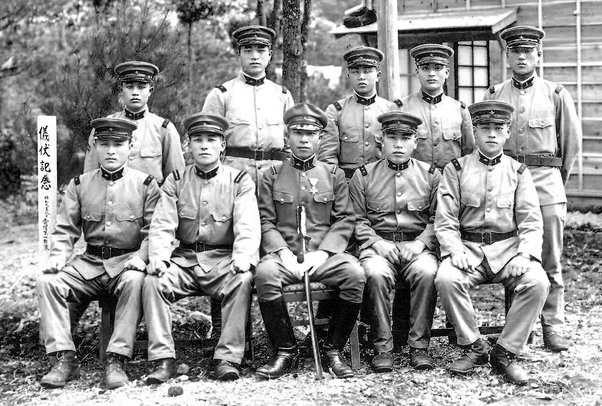
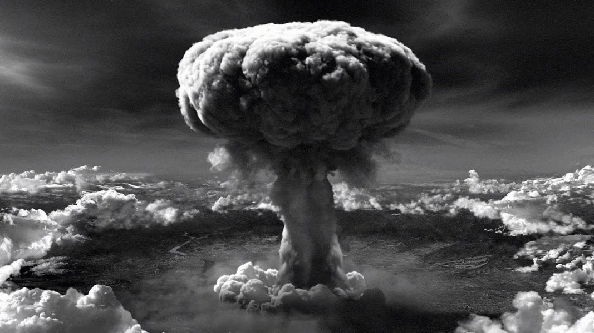

O Japão teve um papel significativo na Segunda Guerra Mundial, sendo uma das principais potências do Eixo, juntamente com a Alemanha nazista e a Itália fascista.

Cenário pré-guerra
Na década de 1930, o Japão passava por um período de expansão imperialista na Ásia, buscando recursos naturais e territórios para sustentar sua crescente economia. O país já havia anexado a Coreia em 1910 e, na década de 1930, ocupou a Manchúria, na China, em 1931, criando o Estado-fantoche da Manchukuo.
Em julho de 1937, o Japão iniciou uma invasão em larga escala da China, conhecida como Segunda Guerra Sino-Japonesa. O conflito se espalhou por todo o território chinês e resultou em inúmeras atrocidades, como o Massacre de Nanquim em 1937, no qual dezenas de milhares de civis e prisioneiros de guerra foram mortos.
Aliança com o Eixo
Em setembro de 1940, o Japão assinou o Pacto Tripartite com a Alemanha e a Itália, formalizando sua adesão ao Eixo. Essa aliança visava combater os Aliados (principalmente Reino Unido, Estados Unidos e União Soviética) e impulsionar as ambições expansionistas do Japão na região do Pacífico e da Ásia.
Em 7 de dezembro de 1941, o Japão surpreendeu os Estados Unidos com um ataque aéreo à base naval de Pearl Harbor, no Havaí. Esse ataque resultou na destruição de grande parte da frota do Pacífico dos EUA e levou os Estados Unidos a entrar oficialmente na Segunda Guerra Mundial.
Após Pearl Harbor, o Japão lançou uma série de ataques bem-sucedidos nas Filipinas, Malásia, Indonésia, Singapura e outras colônias europeias na região do Sudeste Asiático e Pacífico. As forças japonesas rapidamente conquistaram vastos territórios e aprisionaram milhares de prisioneiros de guerra e civis, sujeitando muitos a condições brutais nos campos de prisioneiros.
A resposta dos Aliados foi uma série de campanhas para conter o avanço japonês no Pacífico. A Batalha de Midway, em junho de 1942, foi um ponto de virada crucial, onde a Marinha dos EUA infligiu uma pesada derrota ao Japão, destruindo quatro de suas porta-aviões e enfraquecendo sua capacidade ofensiva.
Com a derrota em Midway e a contínua pressão dos Aliados, o Japão passou a adotar táticas desesperadas, como kamikazes (ataques suicidas de pilotos) e a mobilização de sua população para apoiar o esforço de guerra.
Bombardeamentos atômicos
Em agosto de 1945, os Estados Unidos lançaram bombas atômicas nas cidades japonesas de Hiroshima e Nagasaki, matando centenas de milhares de pessoas e levando à rendição incondicional do Japão em 15 de agosto de 1945, marcando o fim da Segunda Guerra Mundial.

Após a rendição, o Japão ficou sob controle das Forças Aliadas, lideradas pelos EUA. O país passou por um período de ocupação e reformas, sendo desmilitarizado e reestruturado politicamente, econômica e socialmente. Essa ocupação durou até 1952.
A Segunda Guerra Mundial teve um impacto duradouro no Japão, que renunciou à guerra como meio de resolver disputas internacionais e concentrou-se em se tornar uma potência econômica global nas décadas seguintes. O país se desenvolveu rapidamente e, atualmente, é uma das principais economias e líderes tecnológicos do mundo.